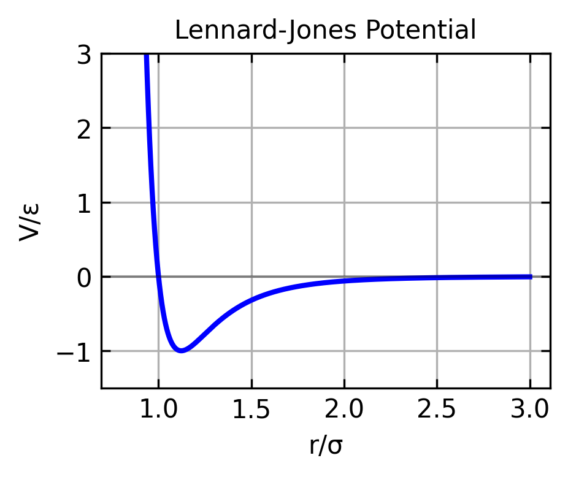
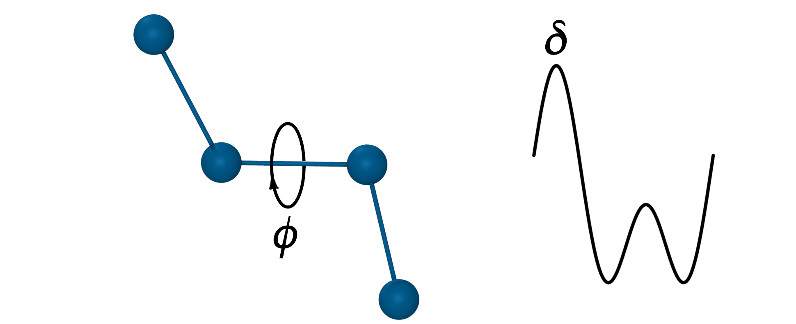
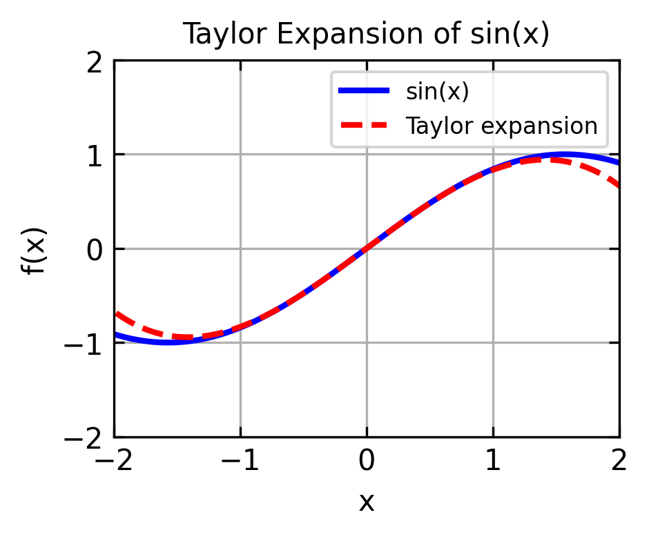
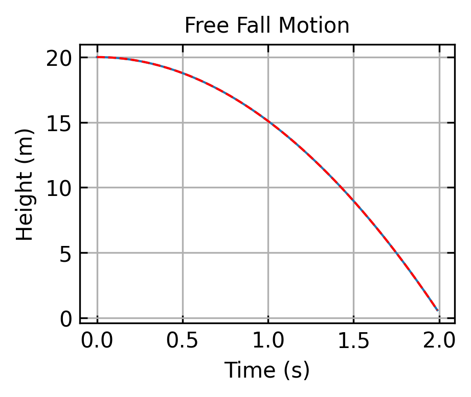

17 Step-by-Step Development of a Molecular Dynamics Simulation
17.1 Molecular Dynamics Simulations
Real molecular dynamics (MD) simulations are complex and computationally expensive but very cool, as they give you a glimpse into the world of atoms and molecules. Here, we will develop a simple MD simulation from scratch in Python. The goal is to understand the basic concepts and algorithms behind MD simulations and get something running which can be extended later but also what we are proud of at the end of the course.
Before we can start with implementing a simulation, we need to understand the basic concepts and algorithms behind MD simulations. The following sections will guide you through the development of a simple MD simulation. The Jupyter Notebook below will help you to copy and paste the code to test the snippets presented.
17.2 Basic Physical Concepts
17.2.1 Newton’s Equations of Motion
The motion of particles in a molecular dynamics simulation is governed by Newton’s equations of motion:
\[m_i \frac{d^2\vec{r}_i}{dt^2} = \vec{F}_i\]
where \(m_i\) is the mass of particle \(i\), \(\vec{r}_i\) is the position of particle \(i\), and \(\vec{F}_i\) is the force acting on particle \(i\).
The force acting on a particle is the sum of all forces acting on it:
\[\vec{F}_i = \sum_{j \neq i} \vec{F}_{ij}\]
where \(\vec{F}_{ij}\) is the force acting on particle \(i\) due to particle \(j\).
17.2.2 Potential Energy Functions and Forces
The force \(\vec{F}_{ij}\) is usually derived from a potential energy function and may result from a variety of interactions, such as:
| Interaction Type | Subtype | Illustration |
|---|---|---|
| Bonded interactions | Bond stretching |  |
| Bond angle bending | ||
| Torsional interactions |  | |
| Non-bonded interactions | Electrostatic interactions | |
| Van der Waals interactions | ||
| External forces |
We will implement some of them but not all of them.
17.2.2.1 Lennard-Jones Potential
The most common potential energy function used in MD simulations is the Lennard-Jones potential. It is belonging to the class of non-bonded interactions. The force and the potential energy of the Lennard-Jones potential are given by:
\[V_{LJ}(r) = 4\epsilon \left[\left(\frac{\sigma}{r}\right)^{12} - \left(\frac{\sigma}{r}\right)^6\right]\]
and
\[F_{LJ}(r) = -\frac{dV_{LJ}}{dr} = 24\epsilon \left[2\left(\frac{\sigma}{r}\right)^{12} - \left(\frac{\sigma}{r}\right)^6\right]\frac{\vec{r}}{r^2}\]
where \(\frac{\vec{r}}{r^2}\) represents the direction of the force (the unit vector \(\hat{r} = \frac{\vec{r}}{r}\)) multiplied by \(\frac{1}{r}\), and \(\epsilon\) is the depth of the potential well, \(\sigma\) is the distance at which the potential is zero, and \(r\) is the distance between particles.
The Lenard Jones potential is good for describing the interaction of non-bonded atoms in a molecular system e.g. in a gas or a liquid and is therefore well suited if we first want to simulate a gas or a liquid.
The figure above shows the Lennard-Jones potential as a function of the distance between particles. The potential energy is zero at the equilibrium distance \(r = \sigma\) and has a minimum at \(r = 2^{1/6}\sigma\). The potential energy is positive for \(r < \sigma\) and negative for \(r > \sigma\).
Values for atomic hydrogen
For atomic hydrogen (H), typical Lennard-Jones parameters are:
- \(\sigma \approx 2.38\) Å = \(2.38 \times 10^{-10}\) meters
- \(\epsilon \approx 0.0167\) kcal/mol = \(1.16 \times 10^{-21}\) joules
Later, if we manage to advance to some more complicated systems, we may want to introduce:
- force in bonds between two atoms
- force in bond angles between three atoms
- force in dihedral angles between four atoms
But for now, we will stick to the Lennard-Jones potential.
17.3 Integrating Newton’s Equation of Motion
When we have the forces on a particle we have in principle its acceleration. To get the velocity and the position of the particle we need to integrate the equations of motion. There are several methods to do this, but we will start with the simplest one, the Euler method.
17.3.1 Euler Method
To obtain this one first needs to know about the Taylor expansion of a function in general. The Taylor expansion of a function \(f(x)\) around a point \(x_0\) is providing an approximation of the function in the vicinity of \(x_0\). It is given by:
\[f(x) = f(x_0) + f'(x_0)(x - x_0) + \frac{1}{2}f''(x_0)(x - x_0)^2 + \cdots\]
where \(f'(x_0)\) is the first derivative of \(f(x)\) at \(x_0\), \(f''(x_0)\) is the second derivative of \(f(x)\) at \(x_0\), and so on. We can demonstrate that by expanding a sine function around \(x_0 = 0\):
\[\sin(x) = \sin(0) + \cos(0)x - \frac{1}{2}\sin(0)x^2 + \cdots = x - \frac{1}{6}x^3 + \cdots\]
Plotting this yields:

The expansion is therefore a good approximation in a region close to \(x_0\).
17.3.2 Velocity Verlet Algorithm
The velocity Verlet algorithm is a second-order algorithm that offers greater accuracy than the Euler method. It can be derived from the Taylor expansion of the position and velocity vectors:
\[\mathbf{r}(t + \Delta t) = \mathbf{r}(t) + \mathbf{v}(t)\Delta t + \frac{1}{2}\frac{\mathbf{F}(t)}{m}\Delta t^2+ O(\Delta t^3)\]
The higher order terms in the Taylor expansion are neglected, which results in an error of order \(\Delta t^3\). In contrast, the Euler method is obtained by neglecting the higher order terms in the Taylor expansion of the velocity vector:
\[\mathbf{v}(t + \Delta t) = \mathbf{v}(t) + \frac{\mathbf{F}(t)}{m}\Delta t + O(\Delta t^2)\]
This makes the Euler method only first order accurate with an error of order \(\Delta t^2\).
The Velocity Verlet algorithm is particularly valuable for molecular dynamics simulations because it offers several advantages over the Euler method. It does a much better job preserving the total energy of the system over long simulation times. The algorithm is also time-reversible, which is a property of the exact equations of motion. Furthermore, it provides symplectic integration, preserving the phase space volume, another important property for physical simulations. These properties make the Velocity Verlet algorithm much more stable for long simulations, which is crucial when modeling molecular systems over meaningful timescales.
The velocity Verlet algorithm provides a stable and accurate way to integrate the equations of motion through a three-stage process. First, we update positions using current velocities and forces: \[\mathbf{r}(t + \Delta t) = \mathbf{r}(t) + \mathbf{v}(t)\Delta t + \frac{1}{2}\frac{\mathbf{F}(t)}{m}\Delta t^2\]
Next, we calculate new forces based on these updated positions: \[\mathbf{F}(t + \Delta t) = \mathbf{F}(\mathbf{r}(t + \Delta t))\]
Finally, we update velocities using an average of old and new forces: \[\mathbf{v}(t + \Delta t) = \mathbf{v}(t) + \frac{1}{2}\frac{\mathbf{F}(t) + \mathbf{F}(t + \Delta t)}{m}\Delta t\]
In these equations, \(\mathbf{r}\) represents the position vector, \(\mathbf{v}\) is the velocity vector, \(\mathbf{F}\) is the force vector, \(m\) stands for mass, and \(\Delta t\) is the timestep. This approach ensures greater accuracy and stability in our molecular dynamics simulations compared to simpler methods.
17.3.3 Simple Integration Example: Free Fall
Let’s start by integrating the equation of motion for a particle in free fall using the Velocity Verlet algorithm. This is an ideal starting example since the physics is straightforward, with gravity being the only force acting on the particle, and we can compare our numerical solution to the well-known analytical one.
Newton’s equation of motion: \[\mathbf{F} = m\mathbf{a}\]
For gravity, the only force acting on our particle is the gravitational force pointing downward: \[\mathbf{F} = -mg\hat{\mathbf{y}}\]
Therefore, the acceleration in the y-direction is constant: \[\ddot{y} = -g\]
The analytical solution to this differential equation gives us the position and velocity at any time \(t\). The position is given by \[y(t) = y_0 + v_0t - \frac{1}{2}gt^2\], and the velocity is expressed as \[v(t) = v_0 - gt\]. Here, \(y_0\) is the initial height, \(v_0\) is the initial velocity, and \(g\) is the acceleration due to gravity. We can use this exact solution to verify our numerical integration method.
